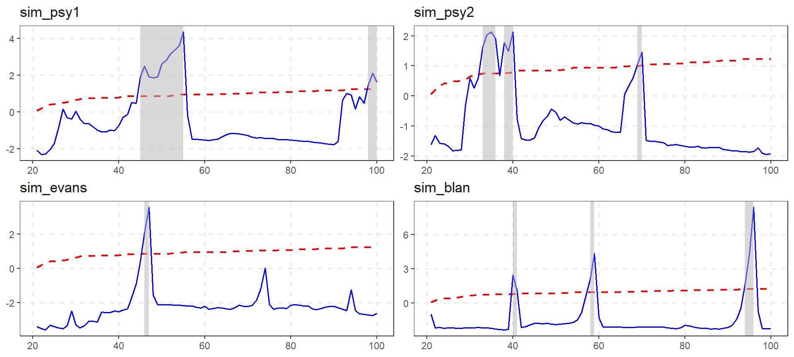
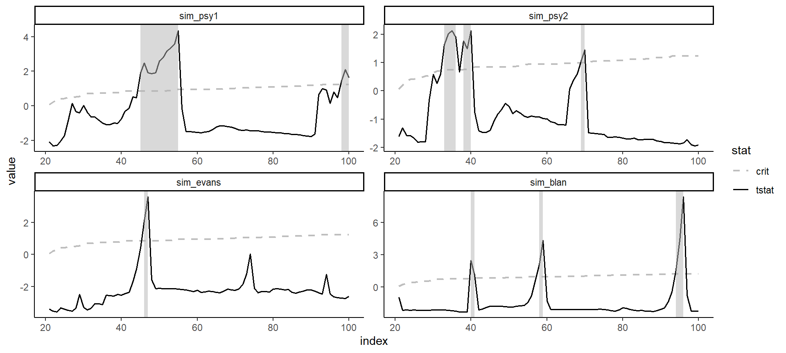
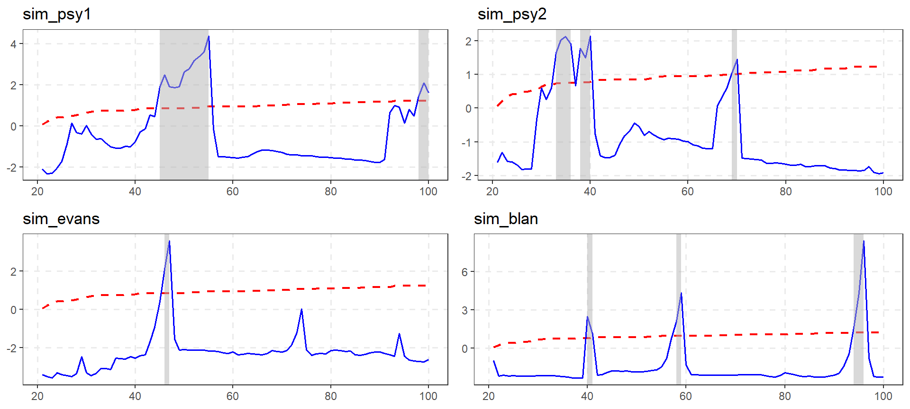
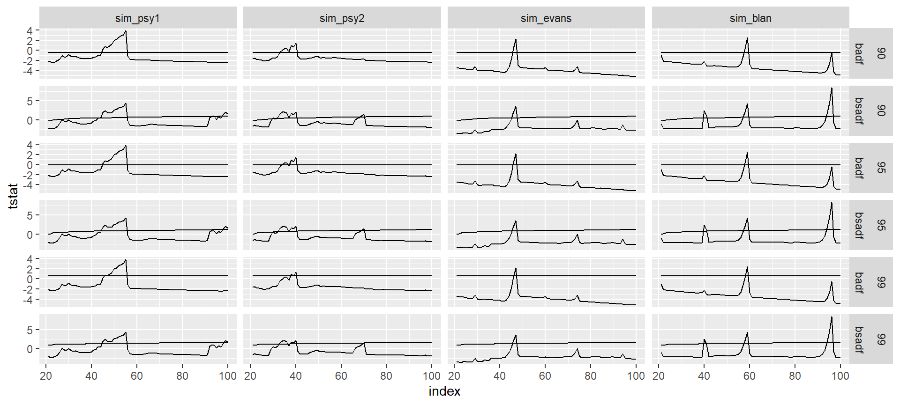
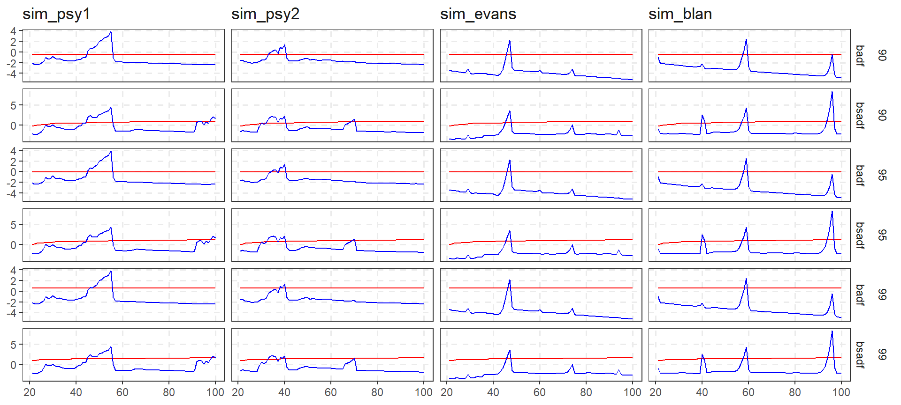
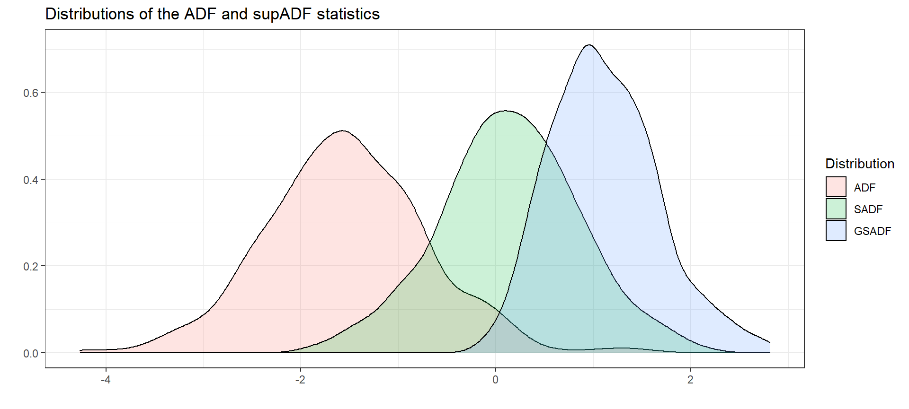
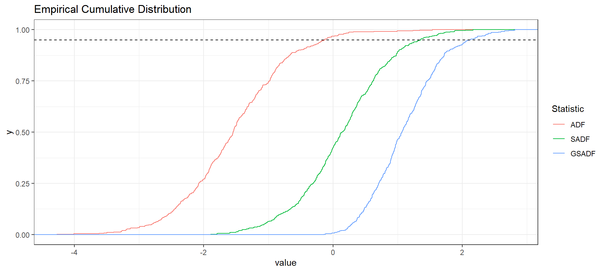

The new design offers full flexibility and customization to produce publication-ready plots. exuber used to plot graph individually in a list, and then you had the option to modify each plot and arrange into a single grob with ggarrange()(which now is defunct). However, newer versions of exuber focus on providing a faceted plot as it easier to change the aesthetics and themes.
Let’s start by simulating some data.

The custom color for autoplot are “blue and”red", however the use may override this option easily with scale_col
autoplot(estimation, crit_values) +
scale_color_manual(values = c("grey","black")) +
theme_classic()
To return to older functionality there are several ways.
library(gridExtra)
# To choose only accepted series (i.e. statistically significant for 5%)
accepted_series <- diagnostics(estimation, crit_values)$accepted
# Through a loop on accepted series
plot_list1 <- list()
for (as in accepted_series) {
plot_list1[[as]] <- autoplot(estimation, crit_values, select_series = as)
}
# Alternatively with lapply
plot_list2 <- lapply(accepted_series, function(x) autoplot(estimation, crit_values, select_series = x))
names(plot_list2) <- accepted_series
do.call(gridExtra::grid.arrange, plot_list1)
With the old functionality you had to make changes one at a time
and then reconstruct the plot with grid.arrange or some other function that arranges all plots into a single grob.
Custom plotting is also very easy with the augment_join function, that merge the estimation and and critical values results in a ggplot2-friendly way.
joined <- augment_join(estimation, crit_values)
joined
#> # A tibble: 1,920 x 6
#> index id name tstat sig crit
#> <dbl> <fct> <chr> <dbl> <fct> <dbl>
#> 1 21 sim_psy1 badf -2.08 90 -0.44
#> 2 22 sim_psy1 badf -2.31 90 -0.44
#> 3 23 sim_psy1 badf -2.39 90 -0.44
#> 4 24 sim_psy1 badf -2.26 90 -0.44
#> 5 25 sim_psy1 badf -2.08 90 -0.44
#> 6 26 sim_psy1 badf -1.79 90 -0.44
#> 7 27 sim_psy1 badf -1.00 90 -0.44
#> 8 28 sim_psy1 badf -1.34 90 -0.44
#> 9 29 sim_psy1 badf -1.28 90 -0.44
#> 10 30 sim_psy1 badf -0.800 90 -0.44
#> # ... with 1,910 more rowsThe output of augment_join returns data in tidy format and the offers full flexibility to the user. After this point plotting becomes extremely trivial.
joined %>%
ggplot(aes(x = index)) +
geom_line(aes(y = tstat)) +
geom_line(aes(y = crit)) +
facet_grid(sig + name ~ id , scales = "free_y")
We also offer two functions scale_exuber_manual and theme_exuber that offer some extra functionality.
joined %>%
pivot_longer(cols = c("tstat", "crit"), names_to = "nms") %>%
ggplot(aes(x = index, y = value, col = nms)) +
geom_line() +
facet_grid(sig + name ~ id , scales = "free_y") +
scale_exuber_manual() +
theme_exuber()
In addition to critical values, we can also calculate the empirical distribution by utilizing the family of *_distr functions. For example if we can simulate the distribution of the supADF tests with Monte Carlo method.

This part is made just for fun.
library(tidyr)
distr %>%
tidy() %>%
rename_all(~ stringr::str_to_upper(.)) %>%
gather(Statistic, value, factor_key = TRUE) %>%
ggplot(aes(value, color = Statistic)) +
stat_ecdf() +
ggtitle("Empirical Cumulative Distribution") +
geom_hline(yintercept = 0.95, linetype = "dashed") + theme_bw()
Enjoy Plotting with exuber !!!